Design & Special Projects
The Creative Independent
The Creative Independent is a growing resource of emotional and practical guidance for creative people. Over a two-year period, I helped to steward the site's design, a constant and adaptive process of assessing and expanding the spectacular original design by Laurel Schwulst. Since then, we've worked together on a range of projects. I've designed microsites, publications, and merch for TCI and its parent company, Kickstarter. Occasionally, I write for the site, and publish interviews with creative people I admire.
Original site design and direction: Laurel Schwulst
Site development: Elliott Cost
Creative direction: Amanda Rios and Brandon Stosuy
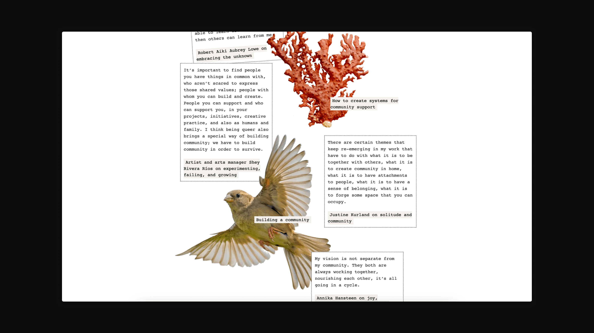
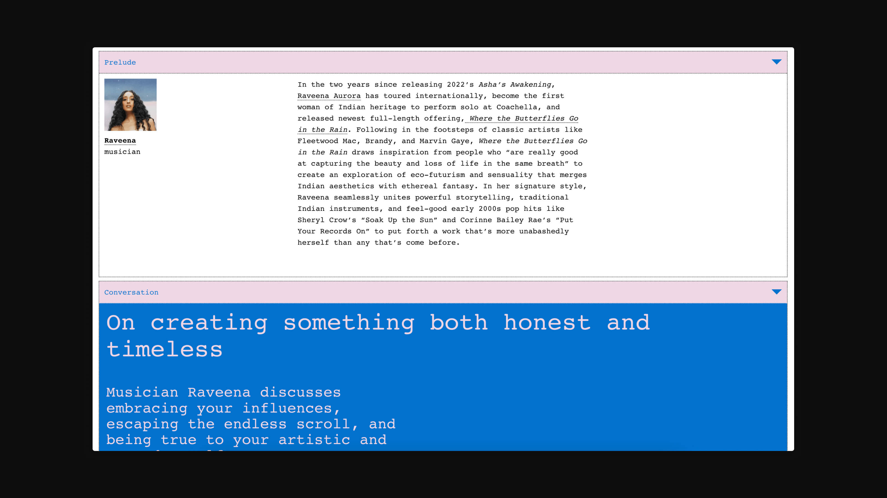
The Creative Independent. Initial design and direction by Laurel Schwulst. Developed by Elliott Cost. Illustrations at bottom right by Oriane Brunat.
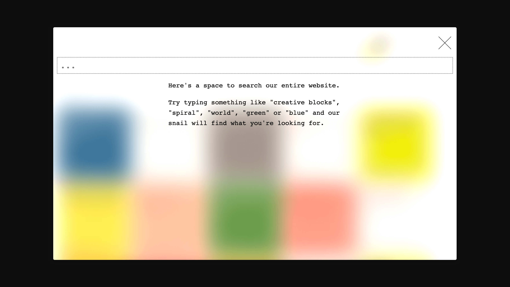
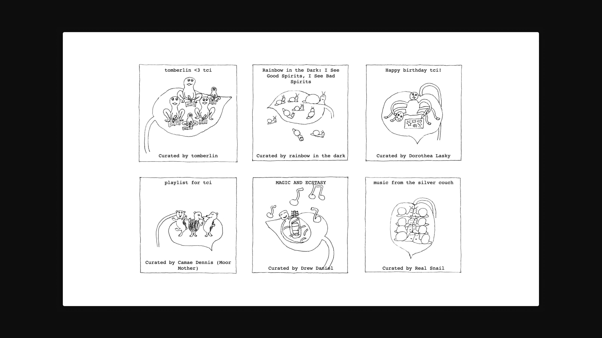
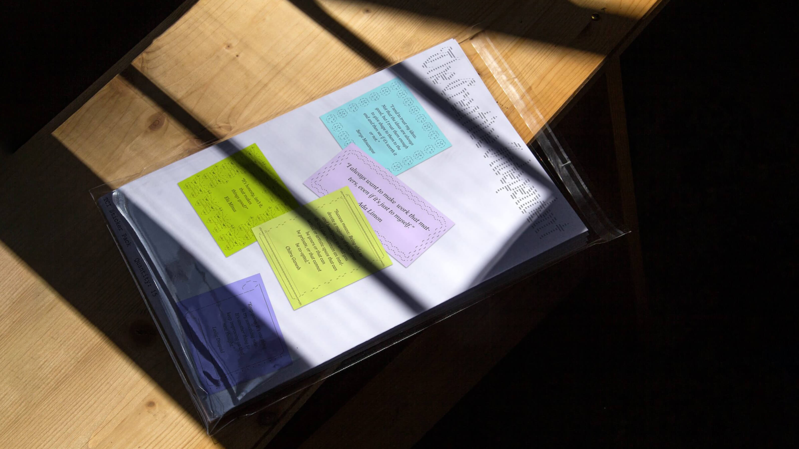
Top: ASCII sticker set, creative directed by Amanda Rios. Right: Quote-a-day calendar, with graphics coded by Maddy Angstreich.
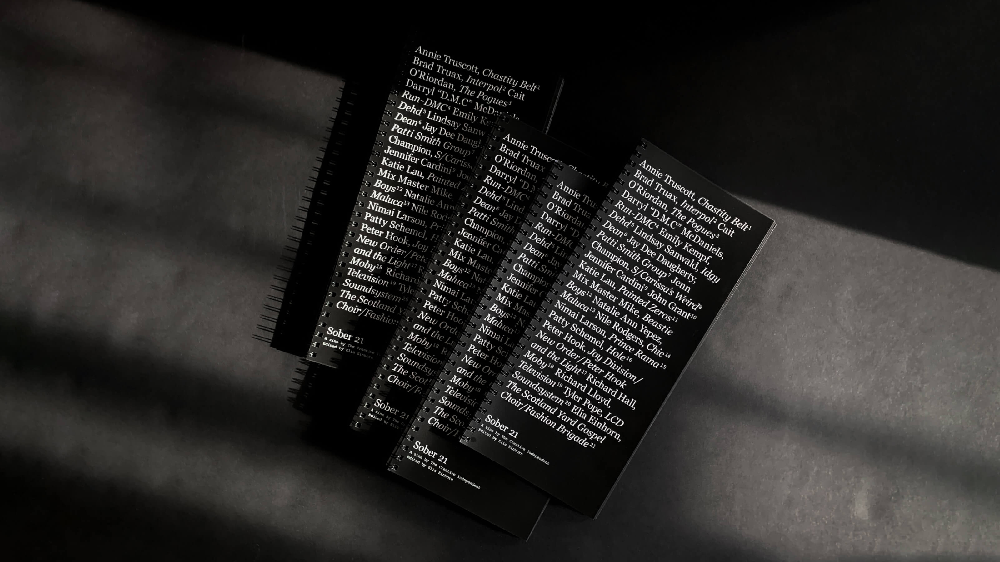
Sober 21 (2021), designed with Elliott Cost and edited by Elia Einhorn.
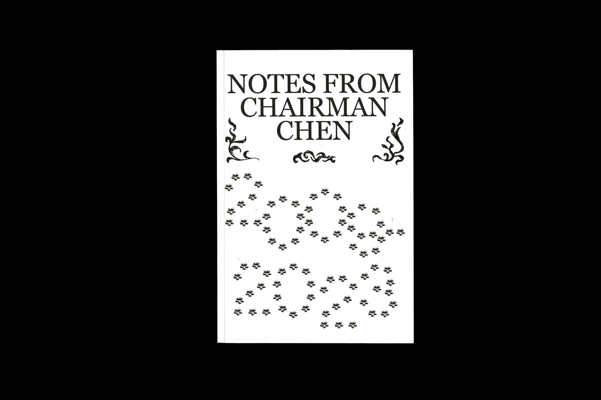
Sober 21 (2021), designed with Elliott Cost and edited by Elia Einhorn.

Notes from Chairman Chen (2024), creative directed by Amanda Rios and edited by Brandon Stosuy and Casey Gerald.
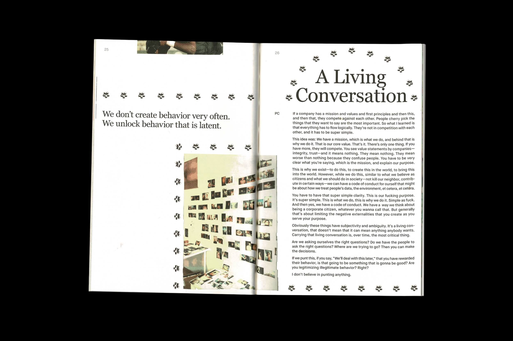
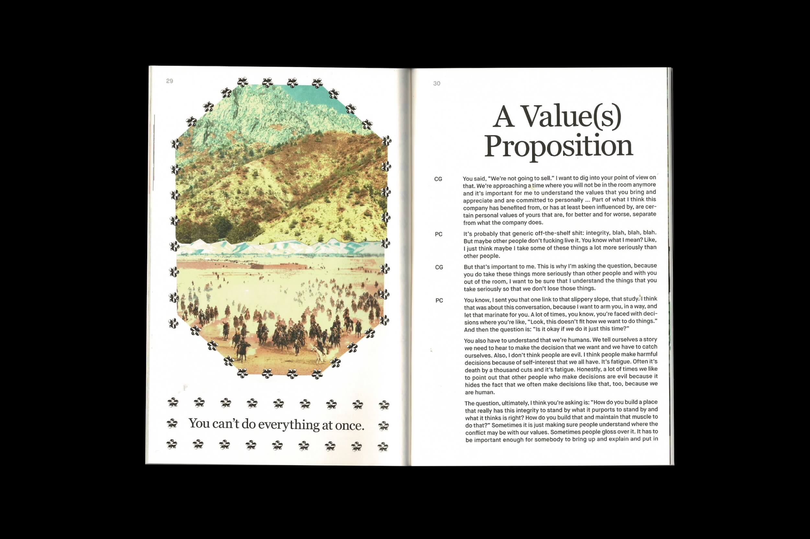
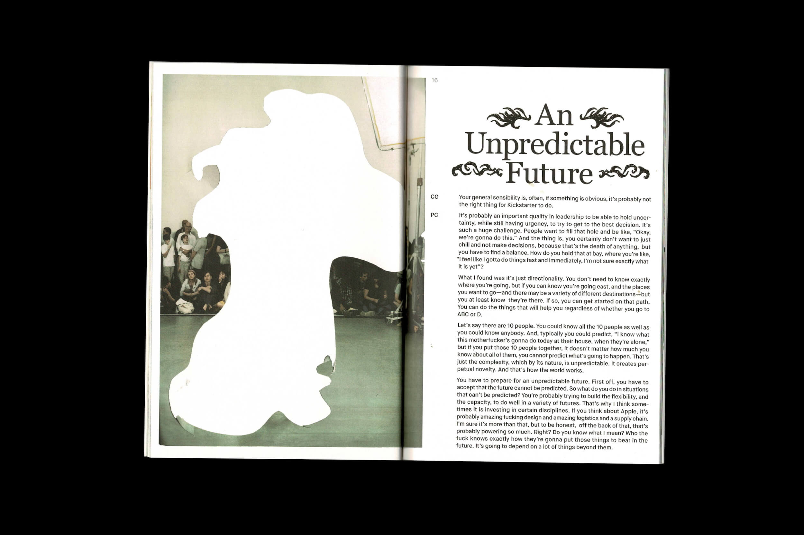
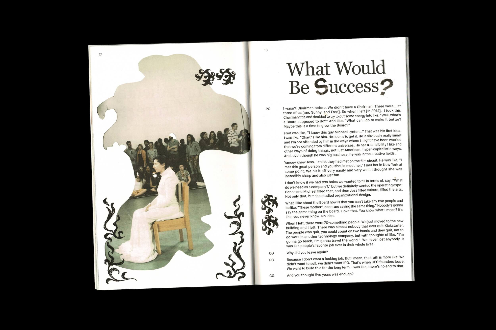
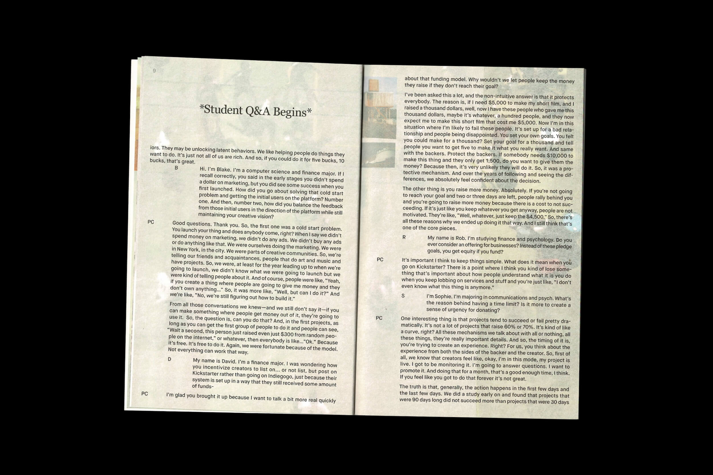
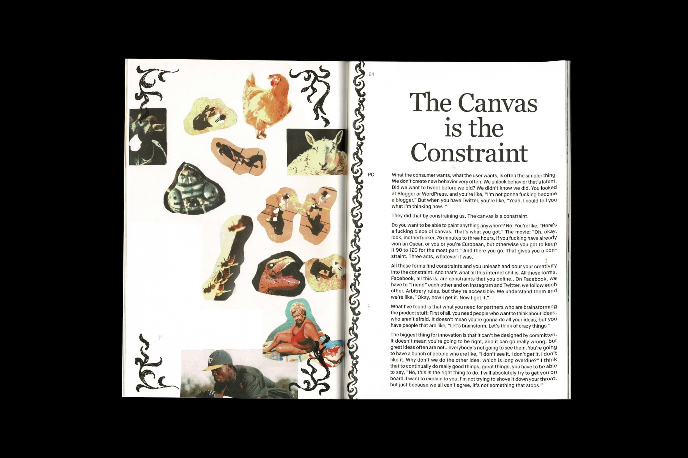